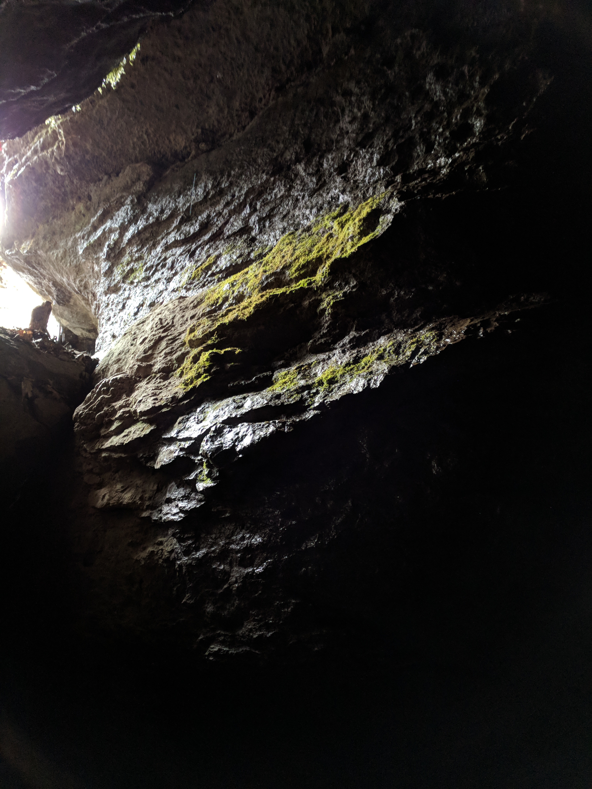

| What: | Picnic |
| Where: | Pond off Highway 100 |
| When: | This Sunday evening, at 6 |
The past couple of weeks, as we've been driving to Edwin Warner, I have noticed a large pond along Highway 100 I pass on the way there. There are two picnic tables there, one on each side of the lake. Both weeks, there have been people parked on the side of the road, with fish poles and tanktops, having an evening. Seems like a good place for a picnic to me.
Here's the picnic table (in the very center of this image). Look at this map. It will take you "Cheekwood Child Development"... Despite the potential deeply symbolic meaning here, don't stop there. Keep going. You'll go to the pond you see on the map, just after Cheekwood Child Development, park on the street, and see me at one of those picnic tables.
Possible unfortunate scenario: it rains and we have no shelter. But I don't think it's supposed to rain in the evening tomorrow. If it does and you were wanting to come, call me before you leave and we'll go from there.
Just thought of another possibility! There is a cave nearby we can crawl into. I've been wanting to take some instruments in there and bounce sounds off the cave walls. Definitely bring a headlamp or flashlight so that you can see in the cave.
Here's a picture of the mouth of this cave from January. Thanks be unto Mike for introducing me to this place!
For next week, I propose we consider going to The Percy Priest Lake "Cook Day Use Area" (yes, that is the official title). It seems like a pleasant place, and even if we don't use the pavilions they have there, there's a beach and some trails we could bum around on. I'd want to go earlier in the mid-afternoon to swim. We could grace the other people there with our songs, as well.
Let's BYO Food again this week. I'll cook again, one of these days. Maybe next week. I'm primarily trying to survive the next two weeks of work before I'm unemployed. So that's where I'm at.
If you have a blanket on which to lie, bring it. Portable furniture that helps you relax more comfortably? Bring it! Some sort of bug repellant? Brrriiiinnngg ittttt. If you have a portable musical instrument and enjoy making vibrations at harmonic frequencies in the spaces you dwell, bbbrrrrriiiiiiiiinnnnnggg thththaaaaaaaat. Bring clothes you don't mind getting muddy, also, so we can go into that cave with no mixed feelings. And most importantly, bring your self :}. ~
Here's a list: Bring
I'll post updates below, so check this page before you leave on Sunday.
Canceled! It's raining, so I'm canceling tonight. Will send something out for next week.